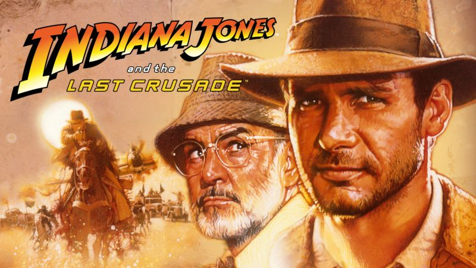

Indiana Jones and The Last Crusade
Clasificacion: PG-13
Fecha de estreno: 1989-05-24
Duracion: 2h 7m
Genero: Aventura/Accion
Sinopsis: El intrépido explorador Indiana Jones tiene que rescatar a su padre, un arqueólogo que ha desaparecido mientras buscaba el Santo Grial. Siguiendo las pistas de la libreta de su padre, Indiana llega a Venecia, donde recibe la ayuda de una profesora especialista. Los dos intentarán rescatar a Henry Jones y, de paso, hacerse con la preciada reliquia, que también quieren los nazis.